所有工作台都在顶部导航「秀场」里，分两层：一级选领域，二级选具体工作台。
图 1 秀场页：上排一级领域（打戏 / 文戏 / 舞蹈 / 数字人 / 产品 / 口播 / cos），下排二级工作台
① 武打助手全屏专业工作台：Skill 市场 + 角色/场景库 + 镜头编排 + 分镜时间线 + 一键成片
秀场 → 打戏助手 → 专业工作台
② 武打助手提示词版本整段 H3 提示词 → 自动拆段 → 逐段生成 → 自动拼片，参考图+参考音频驱动
秀场 → 打戏助手 → 武打助手提示词版本
③ 文戏助手剧本一键分镜，对白驱动分段连拍，角色声线锁定，台词可转配音
秀场 → 文戏助手
④ 多图舞蹈首帧 + 多张参考图共同锚定舞者，整曲编舞分段接力
秀场 → 舞蹈助手 → 多图舞蹈
⑤ 数字人上传人物图 + 口播/演唱音频，长音频自动分段，唇形逐段同步
秀场 → 数字人
⑥ 产品 PVMV 六段式导演提示词，首尾帧强控，成片音乐一致
秀场 → 产品助手
⑦ 字幕转视频字幕/文案驱动的手绘涂鸦·图形动效短片
秀场 → 口播助手 → 字幕转视频
⑧ 数字人口播人物形象 + 口播音频驱动的 MG 图形风口播视频
秀场 → 口播助手 → 数字人口播
两种工作台形态：
- 全屏专业工作台（武打助手）：进入后独占屏幕，左中右 + 底部分镜时间线四区布局。
- 项目式工作台（其余 7 个）：统一为「新建项目 → 分镜工作台」两步，表单不同、分镜工作台结构相同。
新建项目填标题 / 剧本 / 风格 / 分段数 / 参数 / 参考图
AI 分镜自动把梗概拆成可拍的分段提示词
分段生成逐段生成视频，可单独重试
拼接成片一键拼接输出完整视频
最重的一个工作台，全屏四区布局，适合一条一条精修打斗镜头。
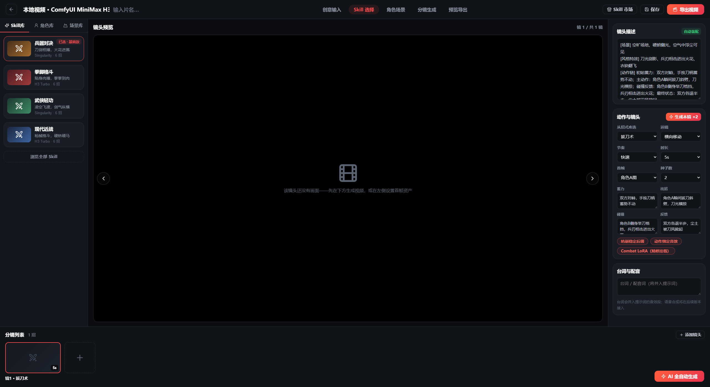
图 2 武打助手全屏工作台：左侧 Skill 库，中央镜头预览，右侧镜头描述与动作镜头编排，底部分镜列表
四个区域
| 区域 | 内容 |
|---|
| 左栏 | Skill 库（兵器对决 / 拳脚格斗 / 武侠轻功 / 现代近战等，每个 Skill 绑定招式库与特效语汇）、角色库、场景库；右上角「Skill 市场 / 保存 / 导出视频」 |
| 中栏 | 镜头预览：显示当前镜头画面与左右翻页，未生成时提示「该镜头还没有画面——先在下方生成视频，或在左侧设置首帧资产」 |
| 右栏 | 镜头描述（自动装配，可「恢复自动」）、动作与镜头（招式、运镜、节奏、时长、首帧、种子数、蓄力/出招/碰撞/反馈四段文本）、台词与配音 |
| 底栏 | 分镜列表：每镜一张缩略卡，右侧「＋ 添加镜头」，右下角橙色 AI 全自动生成 |
- 秀场 → 打戏助手 → 子标签 专业工作台（实验版） → 点 进入全屏工作台。
- 顶部流程条走五步：创意输入 → Skill 选择 → 角色场景 → 分镜生成 → 预览导出。
- 在 Skill 库选一个招式体系（如「兵器对决」），系统会绑定对应招式库与推荐引擎。换 Skill 会重置分镜，所以先选 Skill 再编排镜头。
- 右栏调好动作与镜头后，点 生成本镜 ×2（多种子挑选）或底栏 AI 全自动生成 一把生成全部。
- 满意后点右上角 导出视频。
实战经验：先把节奏设为「快速」、时长 5 秒左右出草稿；每个镜头生成 2 条候选，满意就「选用」，最后「拼接成片」（至少 2 个镜头才能拼）。画面飘或人脸崩，把「种子数」调大挑选，或用左侧角色库里的参考图做首帧锚定。
不想一镜一镜点？用这一版：写一整段提示词，交给软件自动拆段、逐段生成、自动拼片。
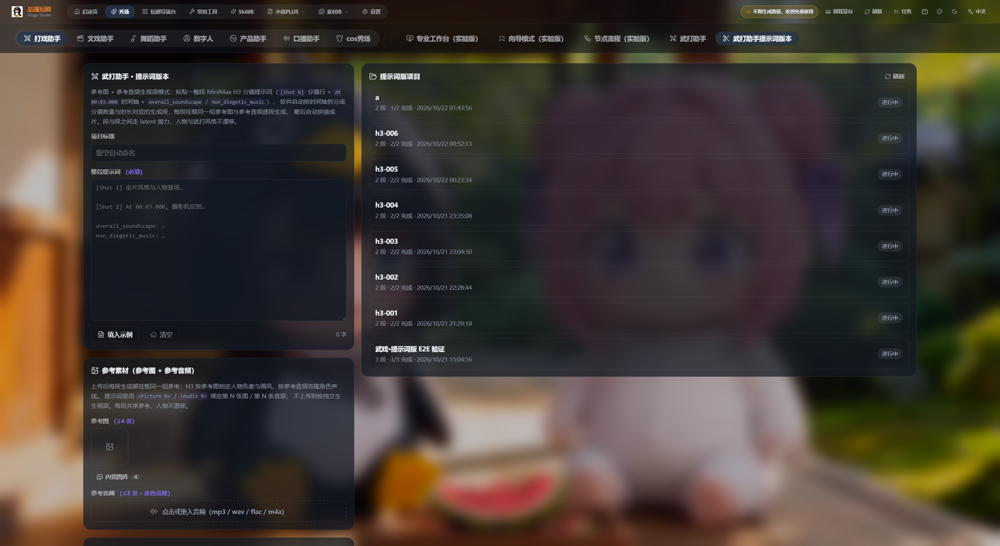
图 3 提示词版本：左侧整段提示词 + 参考素材，右侧提示词版项目列表（分段进度、状态）
- 秀场 → 打戏助手 → 子标签 武打助手提示词版本。
- 左栏填 项目标题（留空自动命名）。
- 整段提示词：按
[Shot 1]、[Shot 2] 标记每一段；末尾补 overall_soundscape / non_diegetic_music 两行音画说明。点 填入示例 可先看标准写法。
- 参考素材：上传参考图（最多 4 张，第 1 张为主角色，提示词里用
<Picture 1> 引用）与参考音频（最多 3 条，用于克隆音色）。
- 点 解析预览 确认拆段结果，再点 一键生成成片。
工作原理：软件按时间轴把整段提示词切成若干分段，每段挂同一组参考图与参考音频逐段生成，段与段之间走 latent 接力，因此人物与动作风格不漂移，最后自动拼成一条片子。
注意：软件不会把整段提示词按时间轴硬切来「生成视频」，而是自动按时间轴拆分成多段，每段按其时长单独生成后再拼接。因此分段数越多、每段越短，显存与时间越省。
对话戏专用：剧本一键分镜，对白驱动分段连拍，角色声线全程锁定。
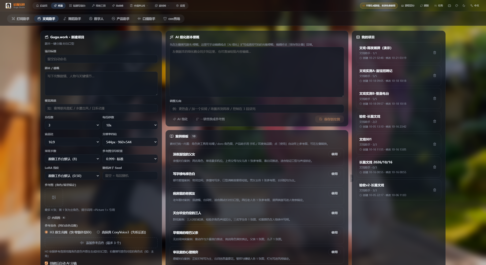
图 4 文戏助手「新建项目」页：左表单 + 中 AI 细化剧本梗概 + 右案例模板与我的项目
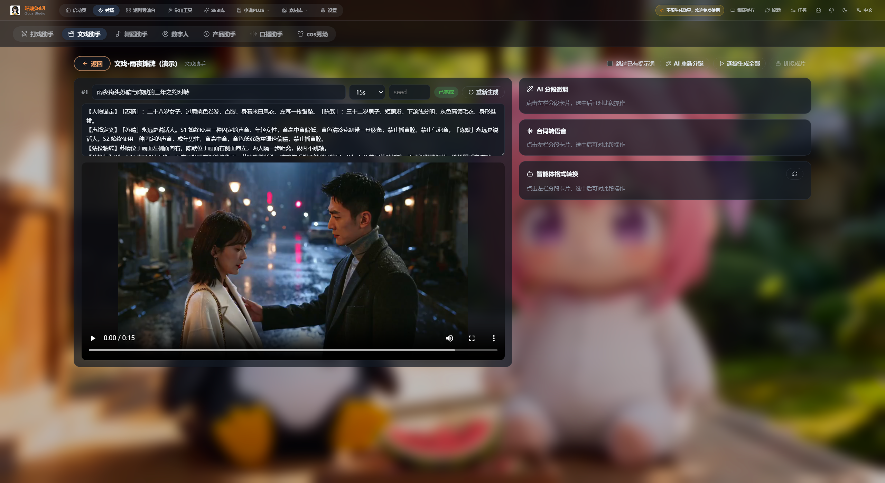
图 5 分镜工作台：分段提示词 + 成片预览，右侧 AI 分段微调 / 台词转配音 / 智能体格式转换
- 秀场 → 文戏助手，左栏标题下方写着「打戏分镜·分段接力连拍 / 剧本一键分镜·对白口型」。
- 剧本 / 梗概：写完整剧情、人物与关键情节。也可点 对话式创建，回答「这段片子讲什么 / 角色靠什么锚定 / 什么风格 / 节奏规格」四问，AI 直接拆成分镜。
- 中栏 AI 细化剧本梗概：填「调整方向」（如「更热血 / 加一个反转 / 场景改到雨夜」），点 AI 细化 扩写成逐段可拍的完整梗概，再 保存到左侧 回填。
- 案例模板：点任一模板的「使用」自动带上参考图（如《雨夜 thriller》暗巷雨夜搏命、蒙面黑衣女剑客冷面厮杀），也可 一键替换成参考图 把梗概里的角色换成你的参考图角色。
- 设好分段数 / 每段秒数 / 宽高比 / 分辨率档位，点 创建项目（勾选「创建后自动 AI 分镜」）。
- 进入 分镜工作台：分段卡片显示「人物锚定 / 声线定义 / 站位轴线」，可用 AI 分段微调、台词转配音、智能体格式转换，最后 连续生成全部 → 拼接成片。
台词转配音：选一段 → 输入台词（每行一句，按行对齐时间轴）→ 选音色 → 生成配音（提取时间轴 → TTS → 替换本段音轨，首次使用需下载配音模型）。还支持 H3 原生克隆（零额外显存）与 高保真 CosyVoice3（先听后拍）两种方案。
整首曲子编舞：首帧 + 多张参考图共同锚定舞者，音轨 1:1 保留，分段接力成片。
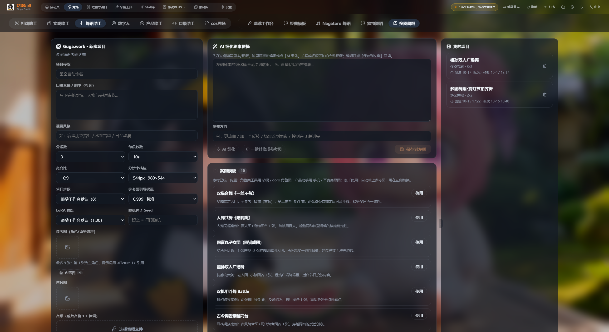
图 6 多图舞蹈「新建项目」页：副标题「多图锚定·整曲齐舞」，参考图上限 9 张，底部为音频（成片音轨 1:1 保留）
- 秀场 → 舞蹈助手 → 子标签 多图舞蹈。
- 填 口播文案 / 脚本（可选）与 视觉风格。
- 参考图（角色/场景锚定）：多图舞蹈最多 9 张，第 1 张为主角色，提示词用
<Picture 1> 引用；再上传 首帧图 锁定开场画面。
- 音频：选择音乐文件，成片音轨与原曲 1:1 保留；该工作台必须先上传音频才能创建。
- 设 分段数 / 每段秒数 / 宽高比 / 分辨率档位 → 创建项目。
- 在分镜工作台里点 连续生成全部，最后 拼接成片；成片自带原曲音轨。
案例模板里「多图舞蹈」专属模板很实用：双强合舞（一丝不苟）、人宠共舞（陪我跳）、四喜丸子女团（四猫成团）、祖孙双人广场舞、双机甲斗舞 Battle 等——点「使用」即带入参考图与分段建议。
上传人物图 + 口播/演唱音频，长音频自动分段，唇形逐段精确同步。
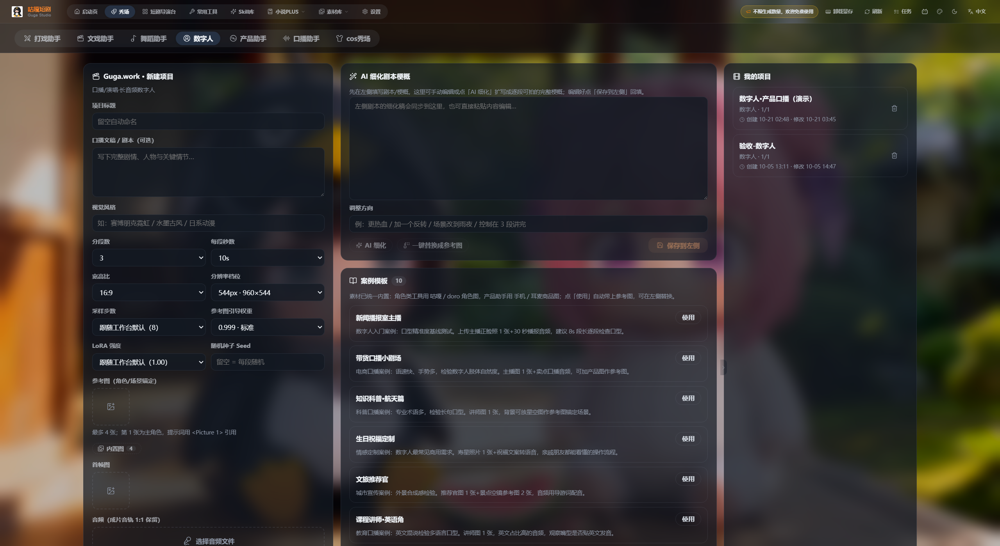
图 7 数字人「新建项目」页：副标题「口播/演唱·长音频数字人」
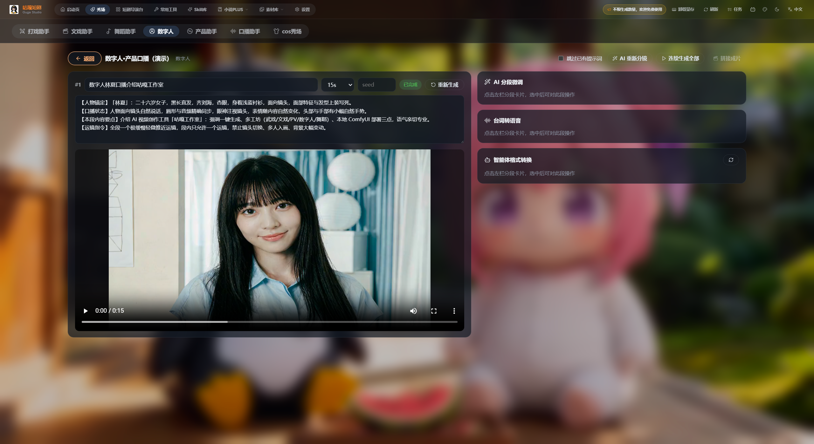
图 8 数字人分镜工作台：分段提示词、音频与成片预览
- 秀场 → 数字人。
- 填标题与 口播文稿 / 剧本（口播稿或歌词）。
- 上传 参考图（人物形象，最多 4 张，第 1 张为主角）与 首帧图。
- 上传 音频（口播或演唱音频），软件会按音频长度自动分段接力。
- 创建项目 → 分镜工作台 → 连续生成全部 → 拼接成片。
数字人最怕两件事：人物走形（提高参考图引导权重或换成更干净的正面图）和口型对不上（检查音频偏移）。文戏/数字人工作台右侧还提供 参考音色（对白音色克隆），最多 3 个，可为不同角色绑定不同音色。
带货与产品向专用：MV 六段式导演提示词，首尾帧强控，成片音乐一致。
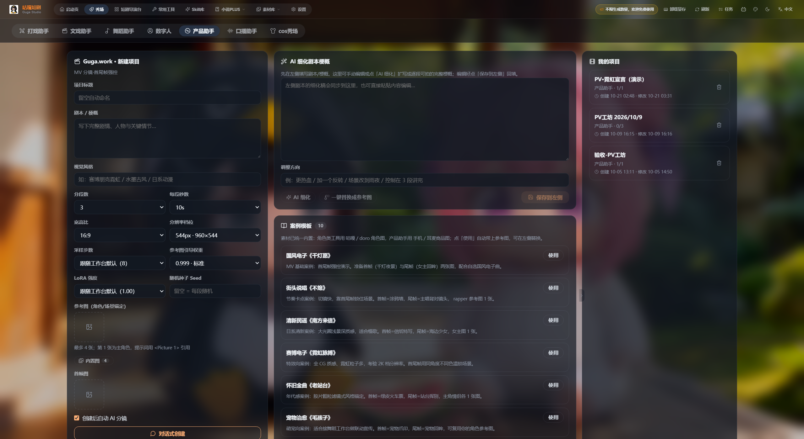
图 8 产品助手「新建项目」页：副标题「MV 分镜·首尾帧强控」
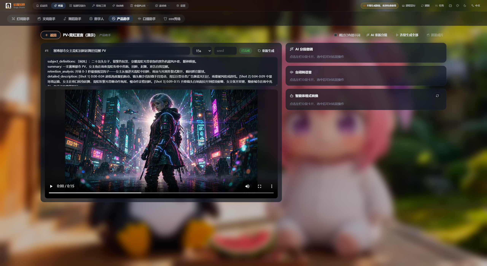
图 9 PV 分镜工作台：分段提示词、成片预览与右侧三项 AI 工具
- 秀场 → 产品助手。
- 写清产品与卖点（剧本 / 梗概），例如「9 号样机实拍、追帧运镜、结尾定格…」的镜头语言。
- 参考图区上传 产品图（内置图库已含「手机 / 耳麦商品图」），首帧图锁定开场。
- 可点 对话式创建 快速起稿，或用 案例模板：国风电子《千灯愿》、街头跑题《不炮》、清新国语《南方来信》、赛博电子《霓虹梦境》、怀旧金曲《老站台》、宠物治愈《毛孩子》。
- 创建后进分镜工作台 → 连续生成全部 → 拼接成片。
首尾帧强控是 PV 的关键：首帧决定开场定格、尾帧决定收尾画面。写梗概时就把这两帧想清楚，能显著减少"产品图变形"。
字幕 / 文案驱动的手绘涂鸦、图形动效短片，适合口播条、知识类短视频。
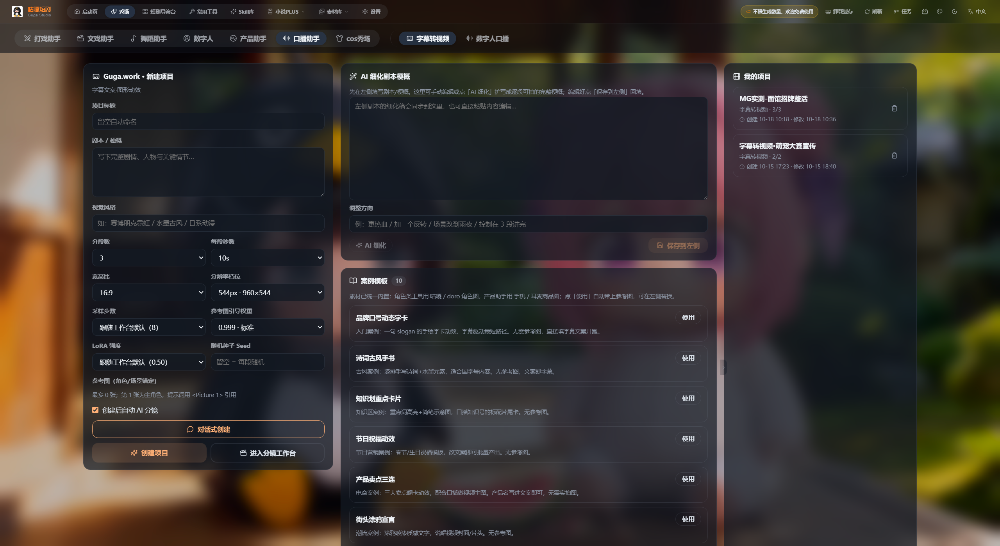
图 10 字幕转视频「新建项目」页：副标题「字幕文案·图形动效」
- 秀场 → 口播助手 → 子标签 字幕转视频。
- 把 口播文稿 / 字幕 贴进「剧本 / 梗概」框，一行一句最佳。
- 选 视觉风格（可留空由 AI 决定）与 分段数 / 每段秒数——字幕类建议每段 3–6 秒，一段一句。
- 参考图可选；创建后自动 AI 分镜 会按文稿逐段生成图形动效提示词。
- 分镜工作台 → 连续生成全部 → 拼接成片。
人物形象 + 口播音频驱动的 MG 图形风口播视频，做知识分享与带货口播。
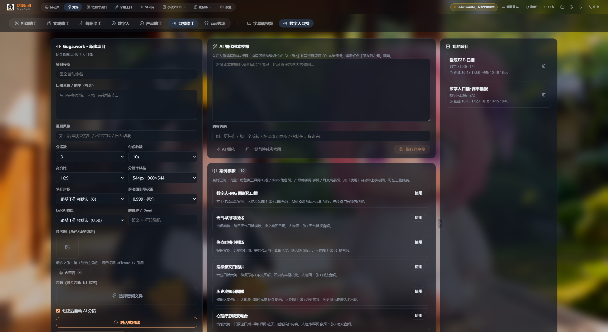
图 11 数字人口播「新建项目」页：副标题「MG 图形风·数字人口播」
- 秀场 → 口播助手 → 子标签 数字人口播。
- 填口播文稿（可选）与视觉风格。
- 上传 参考图（数字人形象）与 音频（你的口播录音），软件按音频自动分段、逐段唇形同步。
- 创建 → 分镜工作台 → 连续生成全部 → 拼接成片。
字幕转视频 vs 数字人口播 怎么选？没有出镜人物、想省事 → 字幕转视频；需要真人/数字人形象出镜 → 数字人口播。两者共用同一套「新建项目 → 分镜工作台」流程，切换顶部子标签即可。
除武打助手外，其余 7 个工作台共用同一套「新建项目」表单与分镜工作台，这里一次性讲透。
新建项目表单逐字段
| 字段 | 说明 | 建议 |
|---|
| 项目标题 | 留空自动命名 | 写清用途，便于在「我的项目」里找 |
剧本 / 梗概
口播文稿 / 剧本（可选） | 完整剧情、人物与关键情节；文戏/口播类强烈建议填 | 写「场景 · 谁对谁 · 怎么收场」 |
| 视觉风格 | 如「赛博朋克霓虹 / 水墨古风 / 日系动漫」 | 与整体分镜风格一致 |
| 分段数 / 每段秒数 | 总时长 = 分段数 × 每段秒数 | 打戏 5–8 秒，字幕 3–6 秒 |
| 宽高比 | 21:9 / 16:9 / 4:3 / 1:1 / 3:4 / 9:16 / 自适应 | 短视频选 9:16 |
| 分辨率档位 | 如 544px·960×544；短边 544–768 可调，最高 2K | 12G 显存默认短边 768（16:9 = 1344×768） |
| 采样步数 | 8 极速预览 / 20 质量最佳 | 免费档上限 8 步 |
| 参考图引导权重 | 0.999 最稳 | 角色漂移降到 0.995 / 0.99；≤0.95 明显弱化贴图 |
| LoRA 强度 | 跟随工作台默认最稳 | 调大易过饱和 |
| 随机种子 Seed | 留空 = 每段随机 | 固定种子可复现同画面 |
| 参考图 / 首帧图 | 第 1 张为主角色，提示词用 <Picture 1> 引用 | 多图舞蹈最多 9 张 |
| 音频 | 成片音轨 1:1 保留 | 多图舞蹈、数字人必填 |
| 创建后自动 AI 分镜 | 创建即自动拆段写提示词 | 保持勾选最省事 |
分镜工作台三块面板
- 左侧分段卡片：每段一条，可编辑「本段梗概」「本段完整 H3 提示词」，改完点生成 / 重试 / 重新生成。
- 中段预览：显示该段视频与时长，可设分段时长、填种子。
- 右侧三件套：AI 分段微调（对选中段说「改成雨夜、加强打斗」并一键改写）、台词转配音（TTS + 替换音轨）、智能体格式转换（从技能库选分镜智能体统一格式）。
- 顶部四个按钮：跳过已有提示词（AI 重新分镜时保留已填提示词）、AI 重新分镜、连续生成全部、拼接成片。
常见问题
| 现象 | 原因与处理 |
|---|
| 提示「未找到可用视频模型」 | 去 设置 → AI 服务 配置并启用视频服务（或一键写入本地 ComfyUI 配置） |
| 提示「本工作台需要先上传音频」 | 多图舞蹈 / 数字人 / 数字人口播必须上传音频后才能创建 |
| 生成中显存溢出 | 把分辨率档位降到 544px 短边、采样步数降到 8 步（免费档上限 8 步） |
| 人物走形 / 每段长得不一样 | 提高参考图引导权重到 0.999，或换更干净的正面参考图；首帧图务必上传 |
| 口型对不上 | 检查音频偏移；数字人优先用「参考音色 + H3 原生克隆」 |
| 段与段之间风格跳 | 别改参考图；确认分段数与每段秒数固定；用「跳过已有提示词」避免重写已调好的段 |
| 重新分镜把写好的提示词冲掉了 | 勾选跳过已有提示词再点「AI 重新分镜」 |
| 成片拼接失败 | 有分段尚未生成成功，先逐段重试再拼接 |
提效技巧
- 先建项目再改参数：项目创建后所有参数都能在分镜工作台改，改分镜不用重建项目。
- 案例模板先行：每个工作台都有 10 个内置模板，点「使用」直接带参考图与分段建议，比从零写省一半时间。
- AI 细化 + AI 分段微调两段式改稿：左边写方向，右边执行，比反复手写提示词快。
- 草稿用低档参数：确认分段没问题再切高清档重生成那一段，不要全片重跑。
- 武打助手先选 Skill：换 Skill 会重置分镜，顺序别搞反。
出片检查清单
- 设置 → AI 服务中，视频服务已配置且默认模型带 ⭐
- 项目标题、视觉风格、宽高比已按投放平台选定
- 剧本 / 梗概已填写，分段数 × 每段秒数与预期时长一致
- 参考图已上传，第 1 张是主角，首帧图已设置
- 需要音频的工作台已上传音频（音轨 1:1 保留）
- 「AI 细化」后的梗概已保存回左侧
- 分段提示词已逐段检查过，风格与锚定一致
- 全部分段状态为「已完成」，无失败段
- 成片已拼接成功并可播放